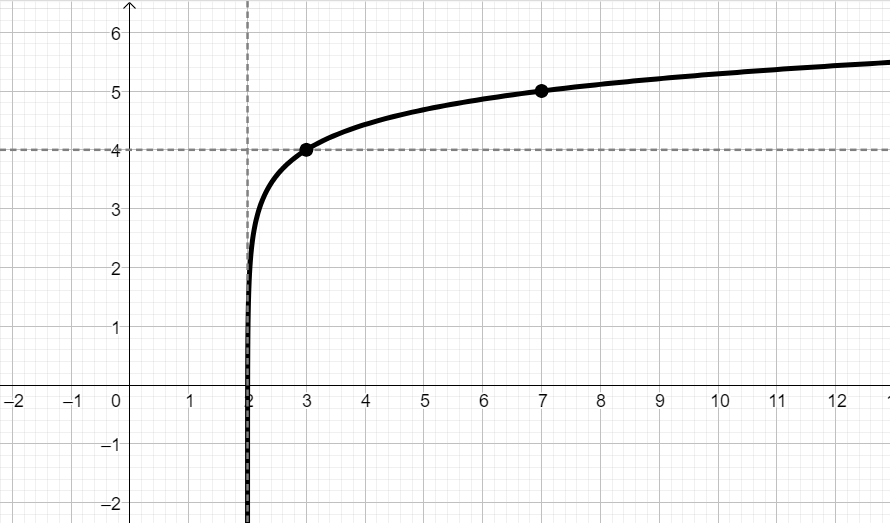
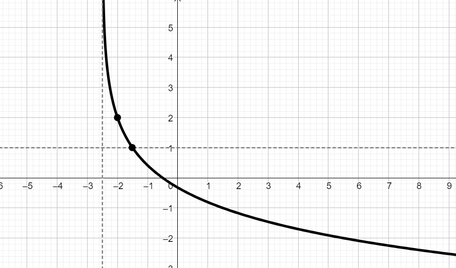
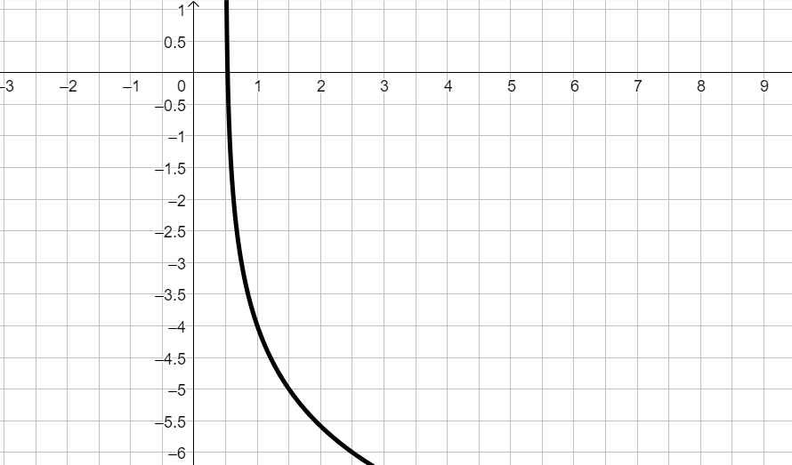

Rappresentare il grafico della funzione \[ f\left(x\right) = log_{_{5}} \left(x - 2\right) + 4 \] Evidenziare nel grafico un punto che permetta di dedurre la base della funzione logaritmica.
Soluzione:

Rappresentare il grafico della funzione \[ f\left(x\right) = log_{_{\frac{1}{2}}} \left(x + \dfrac{5}{2}\right) + 1 \] Evidenziare nel grafico un punto che permetta di dedurre la base della funzione logaritmica.
Soluzione:

Soluzione:
\(y = log_{_{7}}\left(x - 4\right) + 2\)
Scrivere la funzione logaritmica rappresentata dal seguente grafico

Soluzione:
\(y = log_{_{\frac{1}{2}}}\left(x - \dfrac{1}{2}\right) - 5\)
\[ 2ln(x -2) -ln(-3x + 18) = 0 \]
Soluzione:
\(x = \dfrac{1 +\sqrt{57}}{2}\)
\[ log(x^2 - 1) - log(-2x + 14) = log(x +1) \]
Soluzione:
\(x = 5\)
\[ -2\,\,log_5^2(x) +3\,\,log_5(x) + 2 = 0 \]
Soluzione:
\(x = 25\,\,\) oppure \(\,\,x = \dfrac{\sqrt{5}}{5}\)
\[ \dfrac{1}{6\,log_{_3}(x -1)} - \dfrac{1}{2log_{_3}^{^2}(x-1)} = 0 \]
Soluzione:
\(x = 28\)